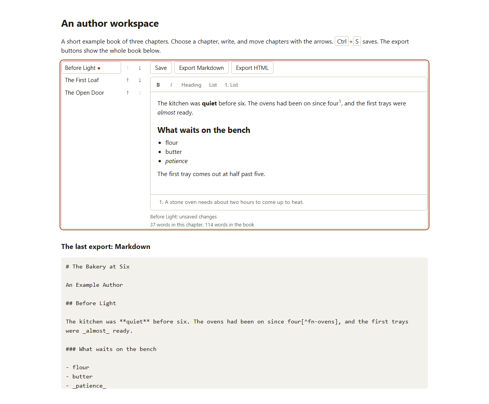

Author workspace
An author opens a book, writes in a chapter, moves chapters, reads the word count, and exports the whole book.
A At a glance
summarycreateBookWorkspace({ mount, files })puts a chapter list, a chapter editor, a word count and export buttons on a page.- The book is a manifest and one file for each chapter, in a file store that the host owns.
- The author writes paragraphs, headings, bold, italic, links and lists. Images and footnotes show and are kept.
- Arrows move a chapter. The chapter keeps its id.
- Save writes only what changed. Export gives the whole book as Markdown or HTML.
- A browser test plays an author through the whole script in Chromium, Firefox and WebKit.
B Why it exists
problemThe plan asks for two acceptance scripts: one for a developer and one for an author who edits and exports a chaptered manuscript. This is the author one, cut down to one person. It is also the first real use of the manuscript format.
C How it works
procedureThe host page makes a file store that holds the book and hands it to the workspace.
- Run
pnpm install,pnpm buildandpnpm quickstart. Openhttp://127.0.0.1:4173/examples/author/. - Choose a chapter. It opens with its headings, its image and its footnotes.
- Write. The line under the editor says "unsaved changes" and the word count follows.
- Press an arrow next to a chapter to move it up or down.
- Press Ctrl+S or the Save button.
- Press Export Markdown or Export HTML.

A narrated video of these steps, 69 seconds: author-workspace.mp4, with captions.
The host code:
import { createBookWorkspace, memoryFiles } from "./packages/editor/dist/standalone/book-workspace.js";
const workspace = createBookWorkspace({
mount: document.getElementById("workspace"),
files: memoryFiles({ "book.json": bookText, "chapters/ch-one.json": chapterText }),
});
await workspace.ready;The workspace
| Member | Does |
|---|---|
ready | A promise that resolves when the book is read. It rejects, with the reason, when the book is not valid |
open(id) | Shows a chapter |
save() | Writes every changed chapter, then the manifest when the order changed |
moveChapter(id, to) | Moves a chapter in the reading order. Not written until save |
wordCount() | { book, chapter }: words in the body text, with unsaved text counted |
exportBook("markdown" \| "html") | Resolves to { text, lost } for the whole book |
book(), current(), isDirty() | The manifest now, the chapter on screen, and whether anything is unsaved |
on("open" \| "change" \| "save" \| "move", handler) | Calls the handler with the chapter's id |
destroy() | Removes the workspace and every editor in it |
Options: manifest (the manifest's path, default book.json), imageUrl (turns an image's path in the book into an address the page can load), and onExport (receives an export from a button; by default the browser saves a file).
The chapter editor alone
createChapterEditor({ mount, chapter }) is the editor without the workspace. getChapter() returns a valid chapter document. Commands: bold, italic, heading with { level }, bulletList, orderedList, undo, redo, focus.
What counts as a word
A word is a run between spaces that holds a letter or a digit, so "don't" and "over-proved" are one word each. The body counts: paragraphs, headings and list items. Footnotes, captions and chapter titles do not.
D What it guarantees
checked promisesEach promise has a test that runs on every change. The browser tests run in three browsers.
- Nothing is written before a save.
- A save writes only what changed. In the script that is one chapter and the manifest. Two chapters that were opened and not edited stay byte for byte the same.
- A moved chapter keeps its id, and its file. Only the order in the manifest changes.
- What the editor writes is valid. Every saved chapter passes the validator, after a split paragraph and after a deleted footnote call too.
- A chapter comes back from the editor exactly as it went in when nothing was edited.
- A deleted footnote call takes its note with it, and undo brings both back.
- Export holds the whole book in the current order, with nothing left out. The HTML has no script, and its footnote links point at notes that exist.
- Text cannot add markup to an export. A
<script>in a chapter comes out as text. - A book that is not valid is not opened, and the page says why.
- A refused write leaves the book unsaved and says why.
- The arrows work from the keyboard, and the focus stays on the chapter that moved.
E What it does not do
limits- No adding or editing of footnotes and images. They show, and they are kept.
- No new chapter, rename or remove.
- No tables, comments, named versions or tracked changes.
- No DOCX or EPUB. Export is Markdown and HTML, and neither is read back.
- No search across the book.
- No warning when a tab closes with unsaved changes.
Limitation: After a click on a chapter's name, the caret arrives in the chapter one frame later. Keys pressed inside that frame land at the start of the chapter. A person is slower than a frame, and the test waits for the focus. It is open to fix.
F Verification
evidence| Check | Outcome |
|---|---|
| The author script, in Chromium, Firefox and WebKit | pass |
| Nine more workspace tests, in the same three browsers | pass |
| Unit tests for word count, both exports and the converter | pass |
| An author who is not the developer doing the script by hand | not checked |
| Screen readers, phones, real Safari | not checked |
Not verified: Retention is not measured for the workspace. No book longer than the three-chapter example was opened, and the workspace reads every chapter at start.
Run pnpm test:browser for the tests and pnpm measure for the file sizes on your machine. Measured on 2026-11-25: book-workspace.js is 142.7 kB gzip, 8.5 kB more than the small prose field.
G Technical appendix
reference| What | Where |
|---|---|
| Workspace | packages/editor/src/workspace/book.ts, book.css |
| Chapter editor | packages/editor/src/manuscript/chapter.ts |
| Engine JSON to chapter, with the repairs | packages/editor/src/manuscript/editor-json.ts |
| Word count | packages/editor/src/book/words.ts |
| Export to Markdown and HTML | packages/editor/src/book/export.ts |
| The author script | tests/browser/author.spec.ts |
| The page the script drives | tests/browser/author-workspace.html |
| Example page and example book | examples/author/index.html, examples/book/ |
| Imports | @devofcodes/editor/book-workspace, @devofcodes/editor/chapter, @devofcodes/editor/book, @devofcodes/editor/book-workspace.css |